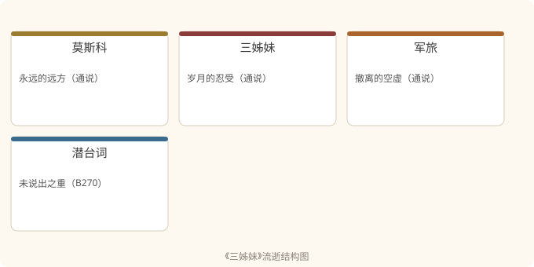

三姊妹
一、基本信息
| 作者 | 安东·契诃夫 |
|---|---|
| 成书/出版 | 1901年（作者页注记：Britannica 列举——三姊妹 (1901)） Anton Chekhov — Encyclopaedia Britannica（百科全书） |
| 国别/地区 | 俄国 |
| 时代 | 近代 · 20世纪初 |
| 体裁 | 戏剧 |
| 语言 | 俄语 |

《三姊妹》流逝结构图（主题·结构图）
二、创作背景
作者页注记：海鸥（1896）、三姊妹 (1901)——'戏剧双峰（Britannica 列举）'。
Britannica（B270）：契诃夫——'Chekhovs gun'与'what is left unsaid'。
题材（通说待核）：普罗佐洛夫家三姊妹的'到莫斯科去'——岁月的流逝。
三、内容脉络
（通说待核）三姊妹的莫斯科梦与就地扎根。
（通说待核）军旅的撤离与姐妹的坚守。
四、主要人物表
| 人物 | 身份 | 说明 |
|---|---|---|
| 奥尔加/玛莎/伊琳娜 | 三姊妹 | （通说待核） |
| 图森巴赫 | 求婚者 | （通说待核） |
五、主题与艺术特点
- '到莫斯科去'的幻梦（通说待核）。
- 时间的流逝与忍受（通说待核）。
- '未说出之重'（B270）。
六、影响与评论
- Britannica：'戏剧双峰'（作者页注记）。
Anton Chekhov — Encyclopaedia Britannica（百科全书） - Britannica：契诃夫戏剧传统与莫斯科艺术剧院（B270 语境——待核）。
Anton Chekhov — Encyclopaedia Britannica（百科全书）
七、阅读建议
难点
- '潜台词'与静止戏剧。
- 俄国军官社会。
- 《三姊妹》（人民文学出版社《契诃夫戏剧集》——通说待核）。
- 俄文原版（公有领域）。
契诃夫戏剧之三；与《海鸥》《樱桃园》对读。
八、待核实
- 三姊妹名字核对（通说）。
- 1901年首演（莫斯科艺术剧院说）待核。
- 结尾'生活还没有过去'台词待核。